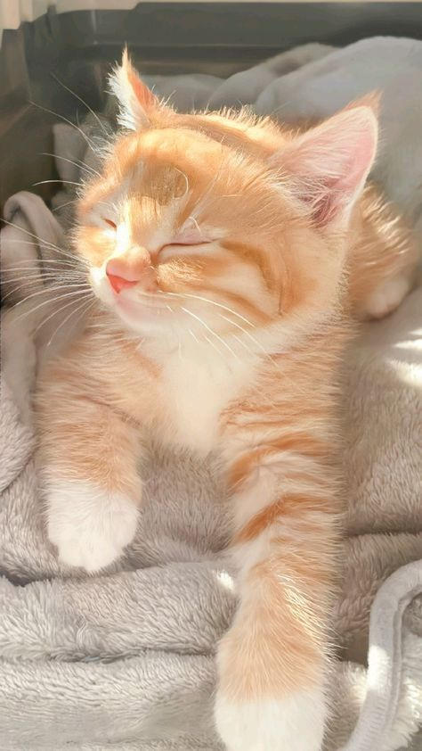
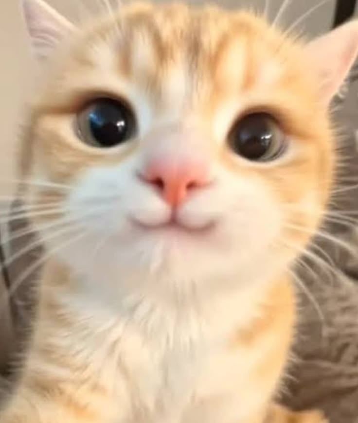
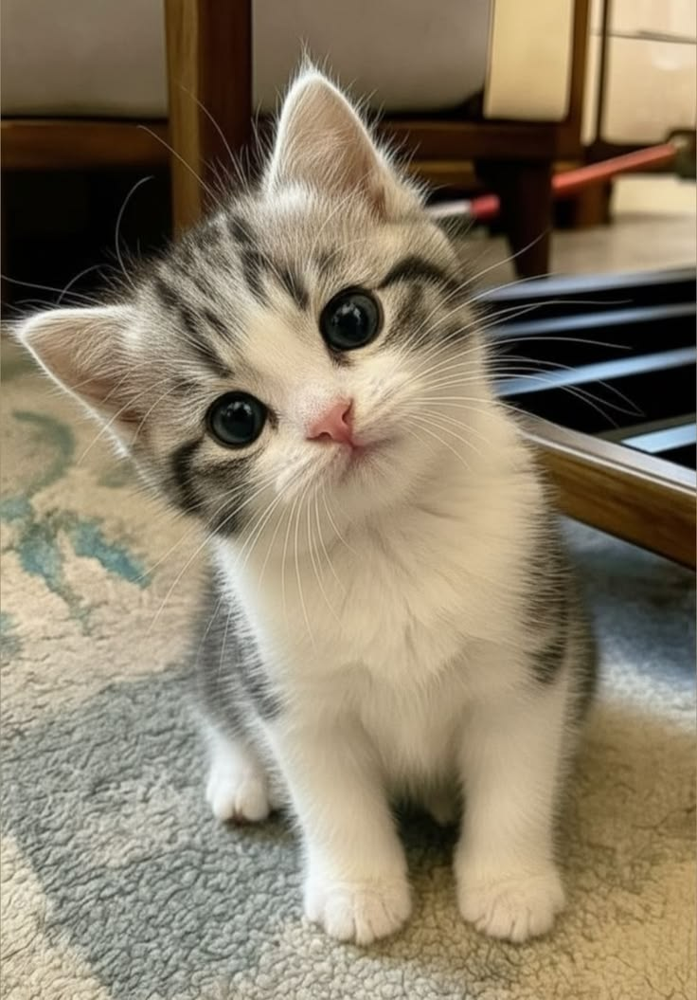
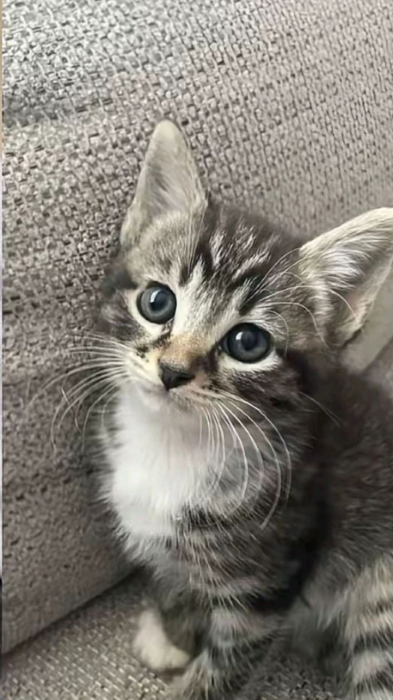
Welcome to our cozy corner for cat lovers! 🐾 Whether they’re sleeping in sunbeams, chasing toys, or purring on our laps, cats bring unmatched joy, independence, and comfort into our lives. This community is dedicated to celebrating our feline companions—sharing cute photos, expert tips, and heartwarming stories of our little masters. From playful kittens to wise senior cats, let's cherish the wonderful, whiskered friends who rule our homes!"
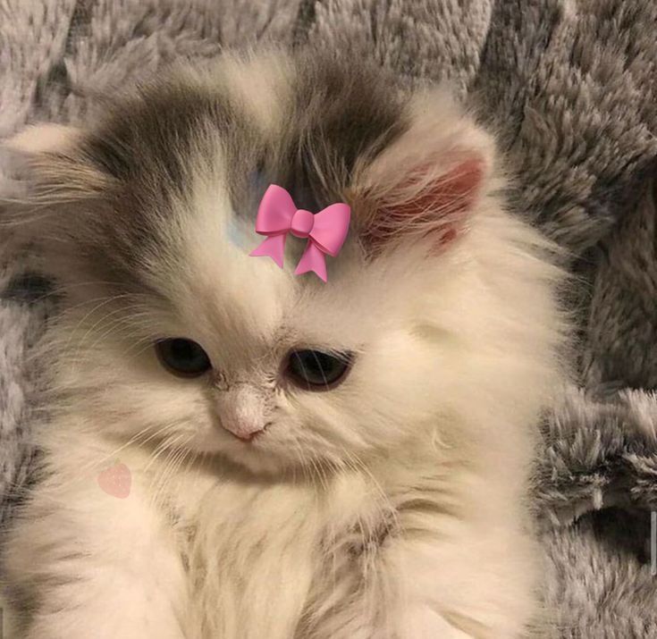
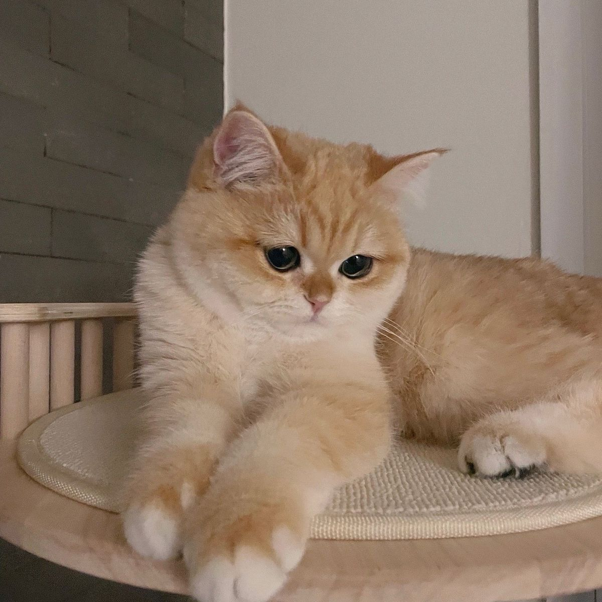
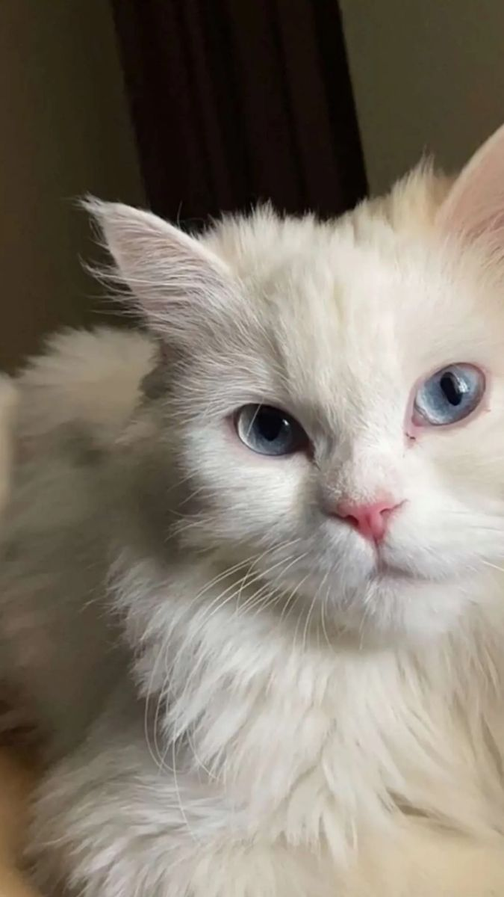
The Persian cat, also known as the Persian Longhair or simply Persian, is a long-haired traditional breed of cat characterised by a round face and petite, but not flat and not smashed in, muzzle.
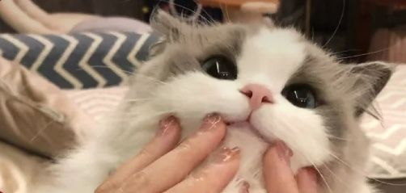
The Ragdoll is a breed of cat with a distinct colorpoint coat and blue eyes. Its morphology is large and weighty, and it has a semi-long and silky soft coat. American breeder Ann Baker developed Ragdolls in the 1960s. They are best known for their docile, placid temperament and affectionate nature.
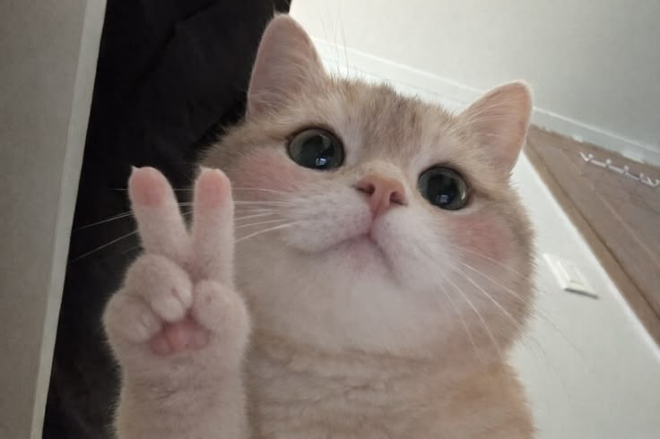
The British Shorthair is the pedigree version of the landrace of British domestic cat, with a distinctively stocky body, thick coat, and broad face. The most familiar colour variant is the "British Blue", with a solid grey-blue coat, copper-coloured eyes, and a medium-sized tail.
Cats also called domestic cat and house cat, is a small carnivorous mammal. It is an obligate carnivore, requiring a predominantly meat-based diet. Its retractable claws are adapted to killing small prey species such as mice and rats.
Beyond their obvious cuteness and companionship, cats are beloved for a multitude of reasons that make them unique, comforting, and entertaining household members.
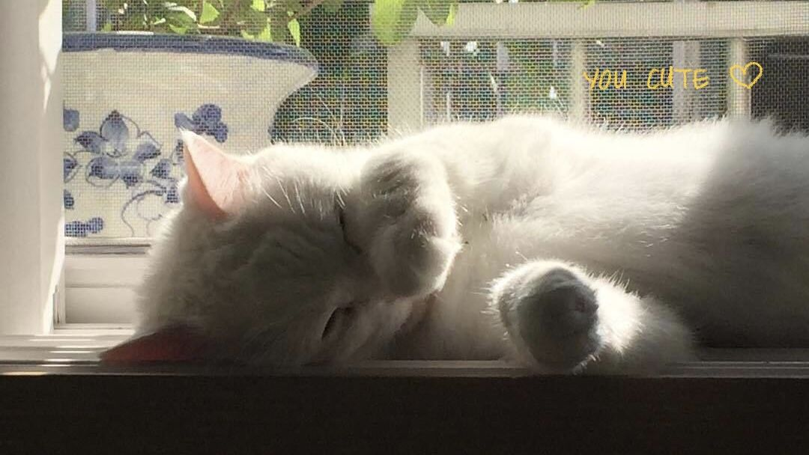
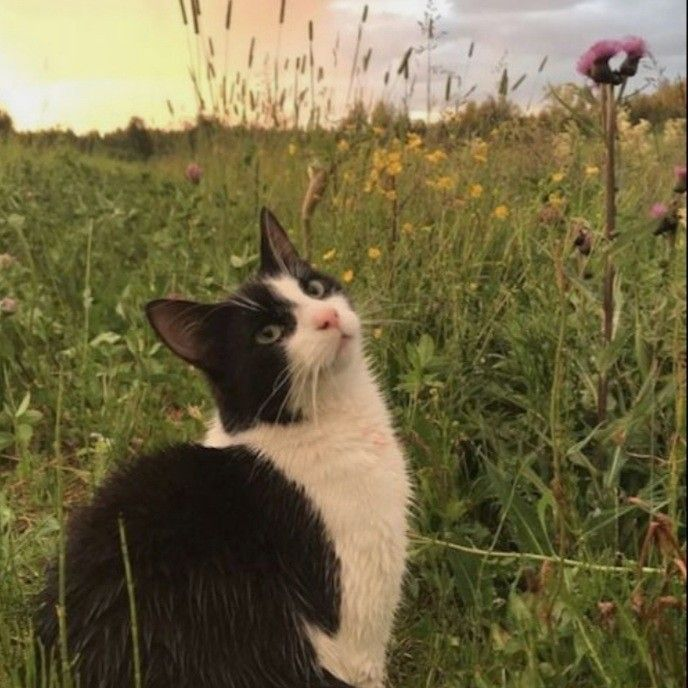